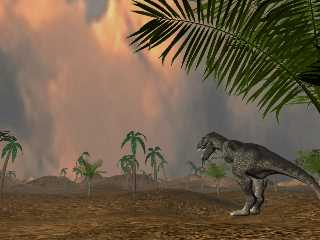
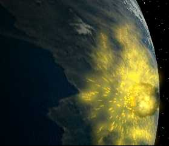

Hompejgji i Arbërit
Teoritë tjera për zhdukjen e dinosaurëve
DINOARBI
Teoria finale për zhdukjen e dinosaureve
Zhdukja e Dinosaureve
Në fund të periodës së Kretakeousit, para 65 milion vite, dinosauret-së bashku me disa grupe tjera të zvarranikeve, duke përfshirë edhe gjallesat-detare plesiosauruset, dhe fluturuesit pterosauret janë zhdukur. Shkencëtaret kanë spekuluar rreth shkakut të kësaj zhdukje për një kohë të gjatë. Disa kanë sugjeruar se ata gjitarët e vegjël kanë ngrënë vezët e dinosaureve, kështu që rishtas evolucioni i bimëve i ka helmuar dinosauret, ose ajo sëmundje i ka zhdukur ata.
Ndryshimi i klimes shkatrrimtare
Tani mëndimi për zhdukjen e dinosaureve është: një ndryshim i papritshëm i klimës e cila u inflencua nga një planet. Kjo u shkaktua nga një ndeshje në mes të Tokës dhe një asteroidi ose një meteorit i madhë. Ndeshja hodhi pluhur të madhë në atmosferen e Tokës, duke bllokuar rrezet e diellit dhe duke sjellur një befasi, shkurt periudhen e akullnajave. Kur Toka mbeti e errët, shumë bimë u than, kështu që ushqimi i dinosaureve bar-ngrënës u humbë. Kur temperatura u zbrit, gjithë dinosauret u bënë të ngadalt dhe u bënë të pa aftë për ta ushqyer vetën. Sepse madhësia e tyre e madhe, nuk mundi të bënte strofull ose strehim për ta ruajtur pak nxetësin e tyre, dhe kështu që ata të gjith u mbytën.
Ndeshja në kosmos

Evidenca bashkohore për këtë teori ka ardhur nga Yukatán gadishull në Meksik. Në këtë vend është një krater masiv 306 km i gjerë dhe 10 km i thellë ku është mendimi se u bë nga çeshtja e përplasjes të një asteroidi apo një meteoriti i cili më sa duket e shkaktoi zhdukjen e dinosaureve para 65 miljon vite. Ndeshja është llogaritur deri te një njollë gjigante me pluhur, i njehsueshëm më 200,000 km kubik, në atmosferën e Tokës. Ajo ishte ajo njolla e cila suall në përmbledhjen e periudhes së akullnajave shfarosjen e dinosaureve.
Prodhuar më;
1 janar 2003
Kontakto me mua në e-mailin tim:
kapreboys6@hotmail.com